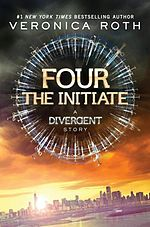
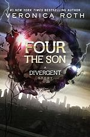
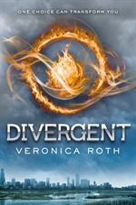

The TransferFans of the Divergent series by #1 New York Times bestselling author Veronica Roth will be captivated by "Four: The Transfer," the first of four stories, each between fifty and seventy-five pages long, set in the world of Divergent and told from Tobias's perspective.In "The Transfer," readers witness Tobias's aptitude test, Choosing Day, and the moment he is given the infamous nickname "Four." |
|
|  | Four: The InitiateMore Four! Fans of the Divergent series by #1 New York Times best-selling author Veronica Roth will be thrilled by "The Initiate," the second of four new short stories told from Four's perspective. Each brief story explores the world of the Divergent series through the eyes of the mysterious but charismatic Tobias Eaton, revealing previously unknown facets of his personality, backstory, and relationships. |
|  | Four: The SonMore Four! Fans of the Divergent series by No. 1 New York Times best-selling author Veronica Roth will be thrilled by "The Son", the third of four new short stories told from Four's perspective.This short story continues to explore the world of the Divergent series through the eyes of the mysterious but charismatic Tobias Eaton, revealing previously unknown secrets of his personality and intriguing backstory. |
 |
Four: The TraitorFans of the Divergent series by #1 New York Times best-selling author Veronica Roth will be excited by "Four: The Traitor," the fourth of four stories, each between fifty and seventy-five pages long, set in the world of Divergent and told from Tobias's point of view."The Traitor" takes place two years after "The Son" and runs parallel with the early events in Divergent. In this robust story, readers follow Tobias as he uncovers the details of an Erudite plan that could threaten the faction system, and makes plans of his own to keep Abnegation safe. At the same time, Tobias is getting to know a new transfer initiate: Tris Prior. |
|  | DivergentIn Beatrice Prior's dystopian Chicago world, society is divided into five factions, each dedicated to the cultivation of a particular virtue--Candor (the honest), Abnegation (the selfless), Dauntless (the brave), Amity (the peaceful), and Erudite (the intelligent). On an appointed day of every year, all sixteen-year-olds must select the faction to which they will devote the rest of their lives. For Beatrice, the decision is between staying with her family and being who she really is--she can't have both. So she makes a choice that surprises everyone, including herself.During the highly competitive initiation that follows, Beatrice renames herself Tris and struggles alongside her fellow initiates to live out the choice they have made. Together they must undergo extreme physical tests of endurance and intense psychological simulations, some with devastating consequences. As initiation transforms them all, Tris must determine who her friends really are--and where, exactly, a romance with a sometimes fascinating, sometimes exasperating boy fits into the life she's chosen. But Tris also has a secret, one she's kept hidden from everyone because she's been warned it can mean death. And as she discovers unrest and growing conflict that threaten to unravel her seemingly perfect society, Tris also learns that her secret might help her save the ones she loves . . . or it might destroy her. |
 |
InsurgentInsurgent is a 2012 science fiction young adult novel by American novelist Veronica Roth, the second book in the Divergent trilogy. As the sequel to the 2011 bestseller Divergent, it continues the story of Tris Prior and the dystopian post-apocalyptic version of Chicago. Following the events of the previous novel, a war now looms as conflict between the factions and their ideologies grows. While trying to save the people that she loves, Tris faces questions of grief, forgiveness, identity, loyalty, politics, and love.The book was first published on May 1, 2012 by the HarperCollins imprints Katherine Tegen Books in the U.S. and HarperCollins Children's Books in the U.K, a "Collector's Edition" was published on October 30 in the United States. Insurgent received mostly positive reviews from critics, with reviewers praising Roth's writing. |
 |
AllegiantThe faction-based society that Tris Prior once believed in is shattered-fractured by violence and power struggles and scarred by loss and betrayal. So when offered a chance to explore the world past the limits she's known, Tris is ready. Perhaps beyond the fence, she and Tobias will find a simple new life together, free from complicated lies, tangled loyalties, and painful memories.But Tris's new reality is even more alarming than the one she left behind. Old discoveries are quickly rendered meaningless. Explosive new truths change the hearts of those she loves. And once again, Tris must battle to comprehend the complexities of human nature-and of herself-while facing impossible choices about courage, allegiance, sacrifice, and love. Told from a riveting dual perspective, Allegiant, by #1 New York Times best-selling author Veronica Roth, brings the Divergent series to a powerful conclusion while revealing the secrets of the dystopian world that has captivated millions of readers in Divergent and Insurgent. |